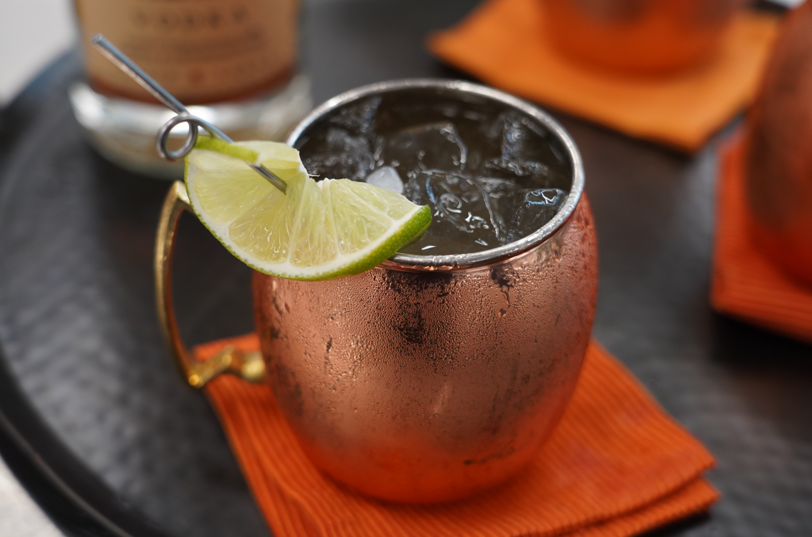

Fall Cider Mule

The Moscow mule just got a yummy upgrade for fall! This is a fun new way to enjoy one of our favorite drinks. Warm, subtle spice from apple cider is brightened up by fresh lime juice and a little "bite" from the ginger and Tito's® vodka-it's perfectly sweet and refreshing.
Ingredients
Ginger Syrup
- 1 cup white sugar
- 1 cup water
- ½ cup chopped fresh ginger
Mules
- ¼ cup freshly squeezed lime juice
- 1 ½ cups sparkling apple cider
- 1 cup vodka (such as Tito's®)
- 1 medium lime, cut into 4 wedges
- 4 cups ice, or as needed
Steps
- Combine sugar, water, and ginger in a small saucepan over medium-high heat. Bring to a simmer, and stir constantly until sugar is dissolved. Remove from heat and strain into a pitcher; discard solids. Let cool completely, 30 to 45 minutes.
- Pour 1/4 cup cooled ginger syrup into a separate pitcher; reserve remaining ginger syrup for a later use. Stir in lime juice, sparkling cider, and vodka. Pour into 4 ice-filled glasses and garnish with lime wedges.